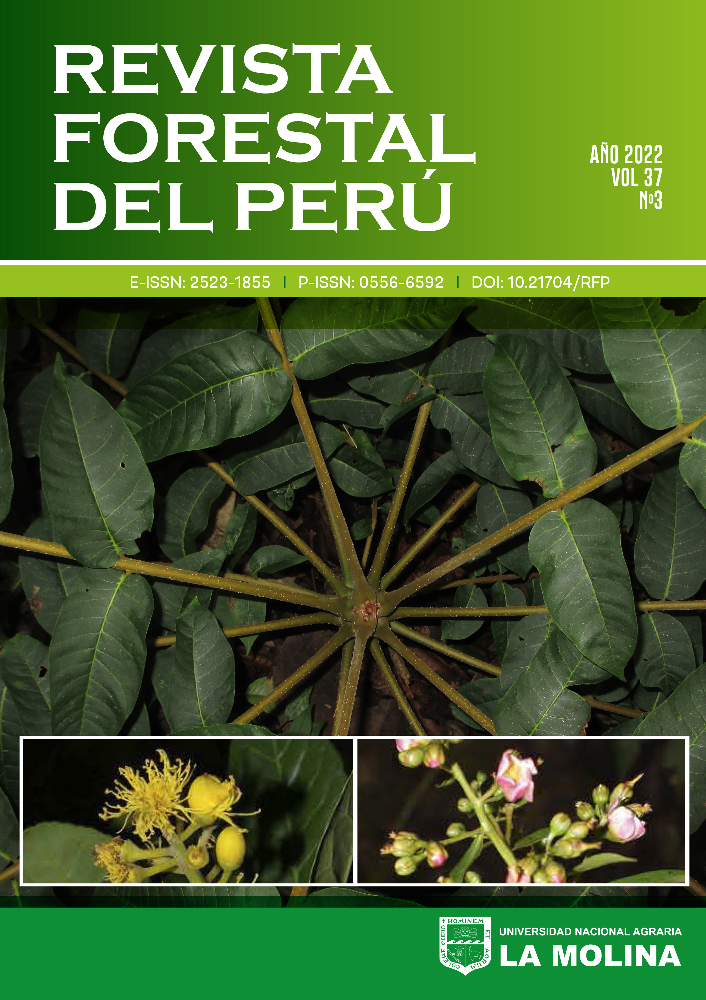

The R package, perutimber, provides easy access to taxonomic information for over 1,300 vascular plant species found in the “Catalogue of the timber forest species of the Amazon and the Peruvian Yunga”. This package is based on the authoritative publication by Vásquez Martínez and Rojas Gonzáles (2022) titled “Catálogo de las especies forestales maderables de la Amazonía y la Yunga Peruana” in Revista Forestal del Perú 37(3, Número Especial): 5-138. With perutimber, researchers and enthusiasts alike can efficiently explore and analyze the timber plant species.
Installation
You can install the development version of perutimber like so:
pak::pak("PaulESantos/perutimber")Basic usage
- Check if species name it listed in the data base:
library(perutimber)
sps_list <- c("Pentaplaris davidsmithii",
"Quararibea wittiia",
"Sterculia tessmanni",
"Sterculia tessmannia",
"Brosimum alicastrum subsp. bolivarense",
"Brosimum alicastrum sub bolivarense",
"Poa annua")-
perutimber::search_perutimberfunction can be used over a vector of species names. You can pass a character vector containing multiple species names as an argument to the function, and it will check whether each of those species names is listed in the data. The function will return a character vector indicating whether each species name is present or not. Here’s an example:
perutimber::search_perutimber(splist = sps_list)
#> [1] "Present" "P_updated_name" "P_updated_name" "P_updated_name"
#> [5] "Present" "P_updated_name" ""-
perutimber::search_perutimbercan be used with a data.frame or tibble. Here’s an example of how to use it:
# base R
sps_df <- data.frame(sps_list)
sps_df
#> sps_list
#> 1 Pentaplaris davidsmithii
#> 2 Quararibea wittiia
#> 3 Sterculia tessmanni
#> 4 Sterculia tessmannia
#> 5 Brosimum alicastrum subsp. bolivarense
#> 6 Brosimum alicastrum sub bolivarense
#> 7 Poa annua
sps_df$review <- perutimber::search_perutimber(splist = sps_list)
sps_df
#> sps_list review
#> 1 Pentaplaris davidsmithii Present
#> 2 Quararibea wittiia P_updated_name
#> 3 Sterculia tessmanni P_updated_name
#> 4 Sterculia tessmannia P_updated_name
#> 5 Brosimum alicastrum subsp. bolivarense Present
#> 6 Brosimum alicastrum sub bolivarense P_updated_name
#> 7 Poa annua
# tidyverse - tibble
sps_tbl <- tibble::tibble(sps_list)
sps_tbl |>
dplyr::mutate(review = perutimber::search_perutimber(splist = sps_list))
#> # A tibble: 7 × 2
#> sps_list review
#> <chr> <chr>
#> 1 Pentaplaris davidsmithii "Present"
#> 2 Quararibea wittiia "P_updated_name"
#> 3 Sterculia tessmanni "P_updated_name"
#> 4 Sterculia tessmannia "P_updated_name"
#> 5 Brosimum alicastrum subsp. bolivarense "Present"
#> 6 Brosimum alicastrum sub bolivarense "P_updated_name"
#> 7 Poa annua ""-
perutimber::get_perutimber_data()allows access to information provided in the “Catalogue of the timber forest species of the Amazon and the Peruvian Yunga”, to obtain information for a specific species, a species name vector must be provided as input. The function returns a data frame containing basic information for each species, such as its common and scientific names.
perutimber::get_perutimber_data(sps_list)
#> names_submitted accepted_name
#> 1 Pentaplaris davidsmithii Pentaplaris davidsmithii
#> 2 Quararibea wittiia Quararibea wittii
#> 3 Sterculia tessmanni Sterculia tessmannii
#> 4 Sterculia tessmannia Sterculia tessmannii
#> 5 Brosimum alicastrum subsp. bolivarense Brosimum alicastrum subsp. bolivarense
#> 6 Brosimum alicastrum sub bolivarense Brosimum alicastrum subsp. bolivarense
#> accepted_name_author accepted_family
#> 1 Dorr & C. Bayer Malvaceae
#> 2 K. Schum. & Ulbr. Malvaceae
#> 3 Mildbr. Malvaceae
#> 4 Mildbr. Malvaceae
#> 5 (Pittier) C.C. Berg Moraceae
#> 6 (Pittier) C.C. Berg Moraceae
#> common_name accepted_name_rank habit
#> 1 Ojoso blanco species Árbol
#> 2 Huayhuash sapote, Sapotillo species Árbol
#> 3 Sapote del monte species Árbol
#> 4 Sapote del monte species Árbol
#> 5 Congona, Machinga, Palo leche, Rama pama, Tamamuri subspecies Árbol
#> 6 Congona, Machinga, Palo leche, Rama pama, Tamamuri subspecies Árbol
#> plant_height_m regions elevation_m uses
#> 1 25-35(-40) m. JU. 100-1000 con aptitud maderable
#> 2 10-25 m. LO, MD, SM, UC. 100-500 con aptitud maderable
#> 3 15-25 m. AM, LO, MD, PA, UC. 100-500 madera aserrada
#> 4 15-25 m. AM, LO, MD, PA, UC. 100-500 madera aserrada
#> 5 20-30(-35) m. AM, LO, MD. 100-500(-1500) maderable - madera aserrada
#> 6 20-30(-35) m. AM, LO, MD. 100-500(-1500) maderable - madera aserrada